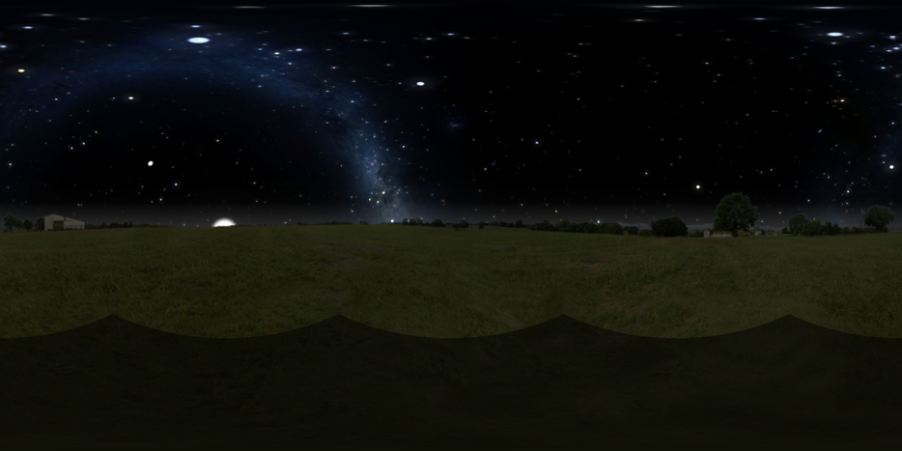
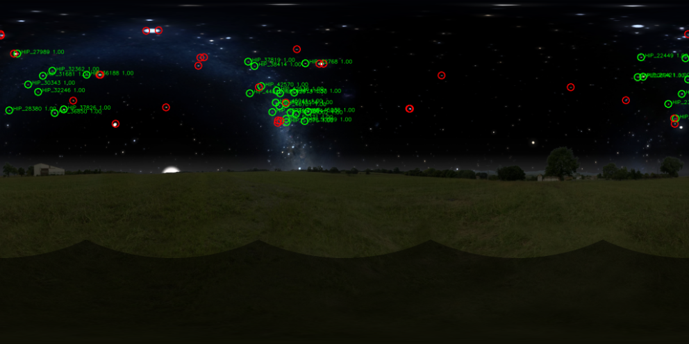

Celestial localisationFix explorer
Celestial localisation / field report
Where the fix lands.
Simulated surface positions, from truth to estimated fix.
Loading metrics
● ground truth
● estimated fix
Evaluation / summary
● ground truth ● estimated fixCurrent dataset
waiting for metrics
waiting for metrics
under 10 km
10-100 km
100-1k km
over 1k km
Metrics will appear when the CSV is available.
Pipeline / dependency graph
Unlocking a sky-localisation stack.
Each node becomes useful only when its prerequisites exist. Source routes merge into shared observations, the sky-contents fork selects credible evidence before pose candidates merge, and published fixes can feed temporal refinement and adaptive fusion.
Node 01 / 31
Read solid nodes as unlocked work and dashed nodes as locked research. Arrows mean “requires”; when several arrows meet, the downstream node unlocks only when the required inputs are available.
A / source unlocks
Start from the endpoints we can actually feed.
The graph keeps each instrument honest: source routes converge into a shared sky map, the sky-contents fork selects credible evidence before pose candidates merge, and published fixes can feed later temporal and adaptive research.
unlocked locked / future optional or conditional
SourcesPreparationShared inputsObservationPose solveOutput
01 / sensor endpointunlocked
RealSense
Colour frame and capture timestamp.
RealSense
Unlocksimage capture
02 / preparationunlocked
Image capture
Acquire and timestamp the camera frame.
RequiresRealSense
03 / simulator endpointunlocked
Stellarium simulator
GPS request plus UTC render target.
Stellarium
Unlocksrender sky views
04 / preparationunlocked
Render sky views
Render six faces with the same sky-map contract.
RequiresStellarium
05 / mergeunlocked
Create panorama
Make one equirectangular sky map from either input route.

Requiresimage capture OR render views
06 / sensor endpointlocked
Fisheye camera
Direct spherical image source.
Fisheye
Unlocksfisheye calibration
07 / calibrationlocked
Calibrate fisheye projection
Map rays directly into sky coordinates.
Requiresfisheye camera
08 / observationunlocked
Detect celestial objects
Find raw stars, the Sun, and the Moon.

Requirespanorama OR fisheye map
09 / calculationunlocked
Do ephemeris calculations
Predict celestial directions for UTC and observer state.
RequiresUTC + ephemerides
10 / research unlocklocked
Identify star catalogue entries
Turn anonymous star patterns into named references.
Requiresraw star detections
11 / mergeunlocked
Solve celestial pose
Match observations against predicted directions.
Requiresdetector + ephemeris
12 / sensor endpointlocked
DWARFLAB3
Telescope or external observation source.
DWARFLAB3
Unlockstelescope calibration
13 / calibrationlocked
Calibrate DWARFLAB3
Establish optical axis, mount, and timestamp transform.
RequiresDWARFLAB3
14 / alternate solvelocked
Produce telescope pose
Generate a pose candidate without the camera detector path.
RequiresDWARFLAB3 calibration
15 / mergepartial
Merge pose candidates
Accept the available celestial or telescope solution.
Requiresone valid pose path
16 / outputunlocked
Publish a pose
Expose a geographic fix and pose to other nodes.
Requirespose candidate merge
17 / temporal researchlocked
Refine pose over time
Fuse multiple published pose estimates across a sliding window to reduce noise and expose uncertainty.
Requirespublished poses + time history
18 / evaluationunlocked
Evaluate the fix
Compare truth and estimate, then preserve metrics.
Acceptspublished pose + optional refinement
Pose publishedfeeds condition classifierday / night / cloud cover
B / condition unlocks
Then the graph forks on what the sky contains.
Daylight, nighttime, and poor visibility unlock different observation families. These branches are deliberately muted because the classifier and the downstream fusion are future work.
Daylight routeDay evidenceCondition gateNight evidenceAtmosphere route
19 / conditional gatelocked
Classify sky condition
Decide which observations are credible from time, visibility, motion, and confidence.
Requiresdetector evidence + UTC
20 / branchlocked
Daytime route
Prefer solar and atmospheric cues when stars are unavailable.
Requirescondition classifier
21 / branchlocked
Nighttime route
Prefer stars, Moon, and predictable moving lights.
Requirescondition classifier
22 / branchlocked
Overcast / poor visibility
Fall back toward cloud motion and contextual priors.
Requirescondition classifier
23 / observationpartial
Sun + Moon cues
Use current solar/lunar detections when the scene supports them.
Requiresdaytime route
24 / moving objectslocked
Detect / reject aircraft
Separate aircraft motion from stable celestial candidates.
Requiresdaylight + motion evidence
25 / stellar unlocklocked
Catalogue star identities
Validate patterns and name the raw star detections.
Requiresnighttime + detector
26 / moving objectslocked
Track satellites
Add predictable orbital references without making them mandatory.
Requiresnighttime + temporal evidence
27 / atmospherelocked
Segment cloud regions
Turn visible cloud texture into trackable regions.
Requiresovercast route
28 / daylight researchlocked
Polarized sunlight
Explore absolute heading when the solar disc is obscured.
Requiresdaytime + new sensor
29 / atmospheric researchlocked
Cloud layers + parallax
Estimate layer motion, deformation, and relative odometry.
Requirescloud segmentation + history
30 / motion researchlocked
Compensate camera rotation
Use IMU evidence before interpreting sky motion as translation.
RequiresIMU + temporal tracks
31 / final unlocklocked
Condition-adaptive fusion
Combine whichever absolute and relative cues are trustworthy.
Requiresavailable branches + uncertainty
A clear night, clear day, broken cloud, or rain should not unlock the same nodes. Weather, ADS-B, and orbital data remain optional priors rather than required dependencies.
Research boundaryThe unlocked path is the foundation: sky-map generation, raw Sun/Moon/star detection, ephemeris calculations, ROS interfaces, and the current pose solver. Catalogue identity, alternate sensors, multi-fix temporal refinement, satellites, aircraft, cloud parallax, IMU compensation, and adaptive fusion remain locked until their prerequisites are built and experimentally validated.